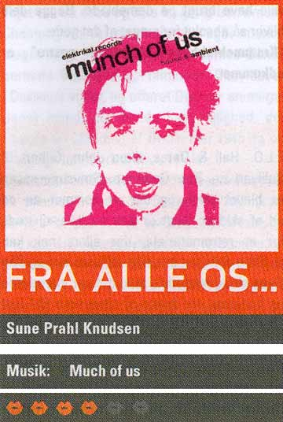

| Marts 2004 |

Det danske pladeselskab Elektrikal Records har netop udgivet sit første album "munch of us". En compilation fyldt med house- og ambientartister fra Københavns elektiske undergrund.
"munch of us" byder på et bredt udvalg af house, ambient og electro. Og det kaster lytteren ud i mange kontraster. Pladen tager afsæt i hårdt pumpende beats og pågående lyrik for så at bløde lidt op med mere poppede ambientnumre, der tager en med ind i et svævende melankolsk drømmeunivers.
På rejsen støder man på pladedebuterende Jonny Warehouse, Thom og Hairwerk, der er kendt fra deres shows fra dunst-festerne i det københavnske homo-miljø gennem de sidste par år. og de gør sig godt - også på cd og uden for rampelysets skær.
"munch of us" er udkommet.
Print denne side